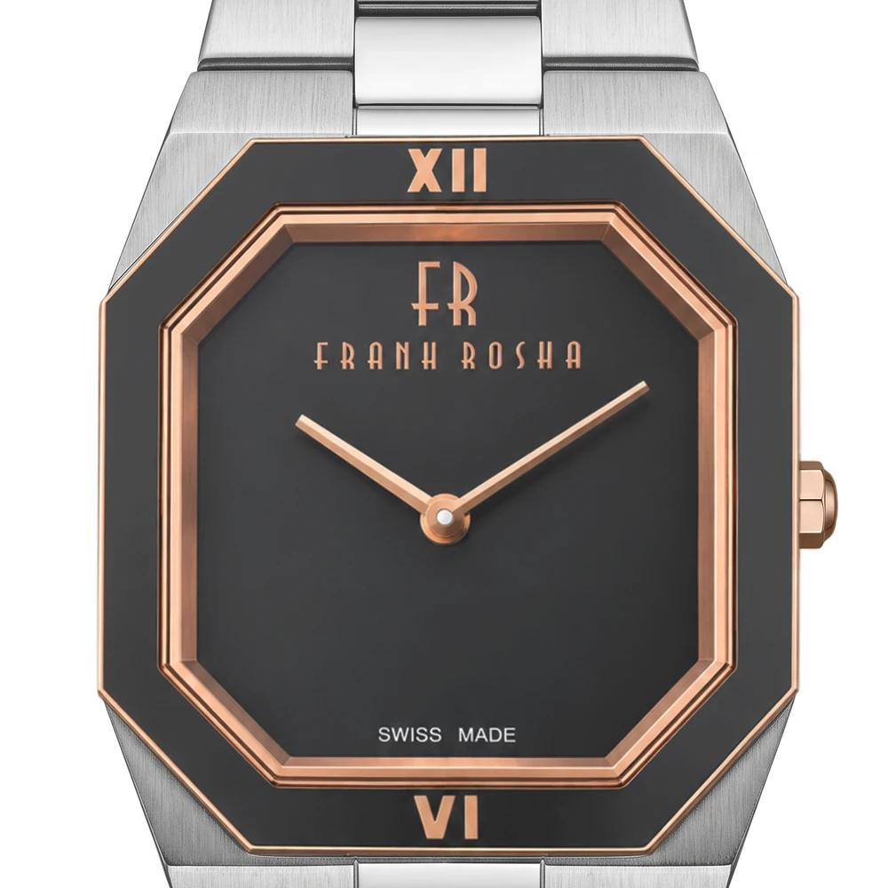
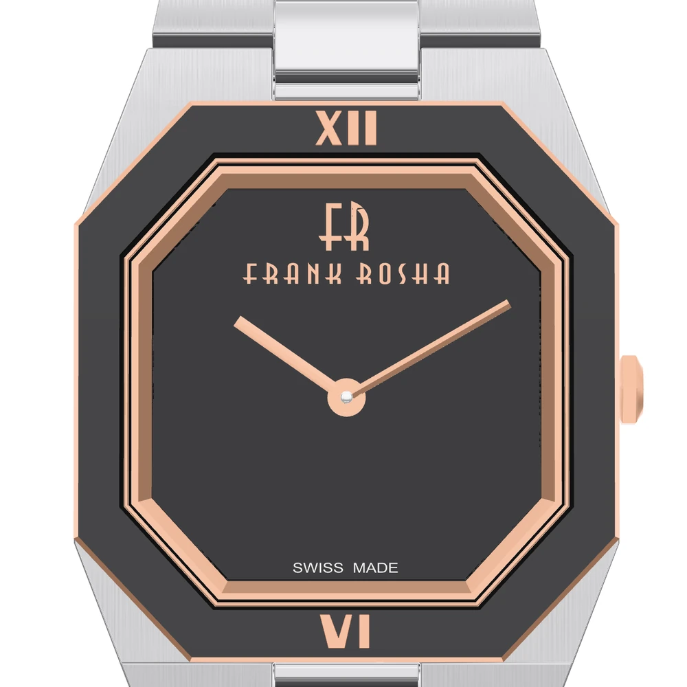
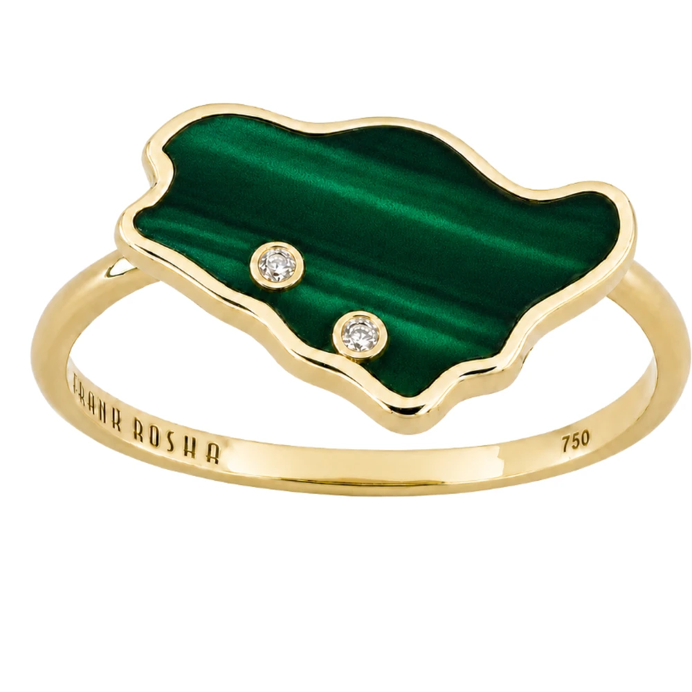
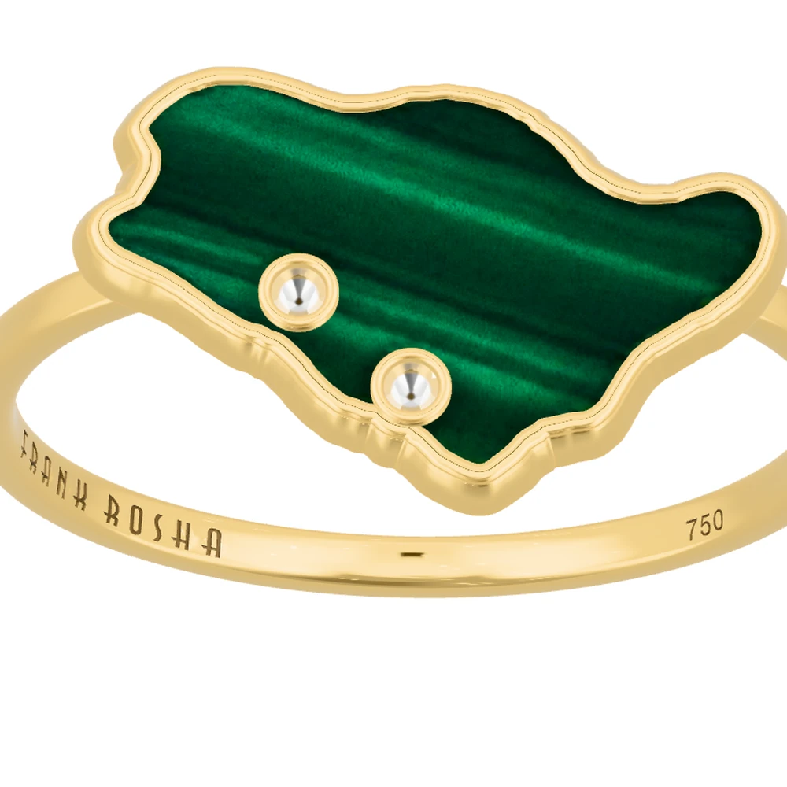

Shoppers turn the piece in their hand on the product page, zoom into the dial and the stones, and on a phone place it on their table at real size. The same thing Cartier does, built on the 3D support Salla already has.
The two pieces on this page are working real-time models of Frank Rosha products, lit and finished to match Aldaham's own product photos. Drag to turn them.
Cartier's product gallery has one slide that loads an iframe from its own subdomain. Behind it is a bespoke application the brand has run since 2021.
Square slide in the product gallery, with a "tap to try" virtual try-on button and a QR code for phones.
A WebGL engine; the app is a "CartierConfigurator" project built in the PlayCanvas editor.
Case, frame, glass, caseback, bracelet and engraving load separately, with diffuse, normal and gloss/metal/AO maps and tiled brushed-steel textures.
One config file maps every reference to its parts and materials, plus prefiltered studio light maps.
This is a six-figure, agency-maintained application. Aldaham gets most of the visual result for a small fraction of the cost by using a standard viewer and the 3D field Salla already provides.
Real dimensions and finishes, under 6 MB. Made from the supplier's CAD files where they exist.
Salla's free official app (دعم الصور ثلاثية الأبعاد) attaches the GLB to the product's main image. Also available through the Merchant API.
Models and studio light files on a custom domain with CORS and long caching. Effectively free at Aldaham's size.
Adds the 3D slide to the gallery with the matched studio lighting, view buttons, AR on phones, a QR code on desktop and live time on watches.
?3d=1.Each model was rendered in the shop's own viewer at the same angle as Aldaham's product photo and measured region by region: brightness, contrast, fine detail and colour of every finish. The studio lighting ships with the model, so what shoppers see is what was checked.


Photo3D

Photo3D| What was matched | How |
|---|
| Assumed, to confirm with Aldaham | Why |
|---|
Frank Rosha is Aldaham's own brand, so the factory almost certainly holds the CAD files: jewellery is designed in CAD for casting, and the watch's shop images look like computer renders. Converting those files is the cheapest and most accurate route.
| Method | Ring | Watch | Turnaround | Fit for this |
|---|---|---|---|---|
| Convert supplier CAD or render files | $80–400 | $250–900 | 1–3 days | Best |
| 3D artist from photos and a physical sample | $150–600 | $300–1,500 | 3–10 days | Good |
| Specialist studio (Hexa, Modelry, 7CGI) | $100–1,000+ | 2–10 days | Good, quote-based | |
| 3D scanning | $100–500 | 1–3 days | Fails on polished metal and stones | |
| AI image-to-3D (Meshy, Tripo, Rodin) | under $2 + cleanup | minutes | Blurred text, wrong details | |
Hosting stays near zero: 300 products at about 4 MB is 1.2 GB, inside Cloudflare R2's free 10 GB, and R2 does not charge for traffic.
| salla/aldaham-3d.js | The script for the store |
| salla/README.md | Install guide: hosting, Salla setup, adding products, analytics |
| pages/watch.html, ring.html | Copies of Aldaham's product pages running the script |
| models/*.glb | The two models and their poster images |
| env/*.hdr | Studio lighting for watches and jewellery |
| blender/ | Scripts that rebuild each model |
| tools/ | Photo-matching tools: render, compare, region check |
| docs/research.md | Research notes with sources |